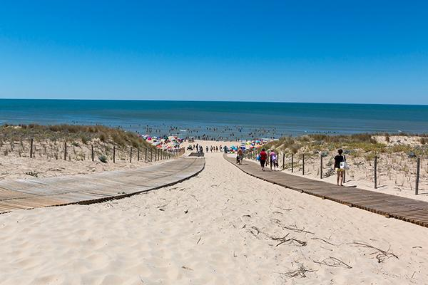
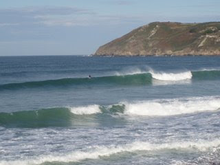
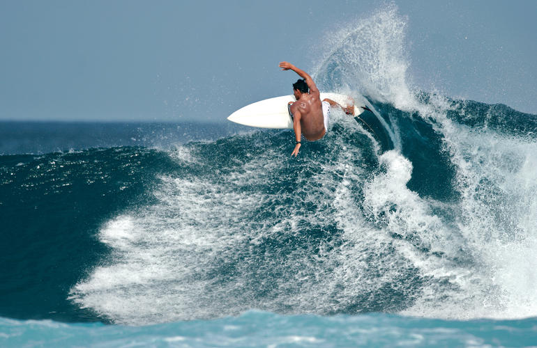
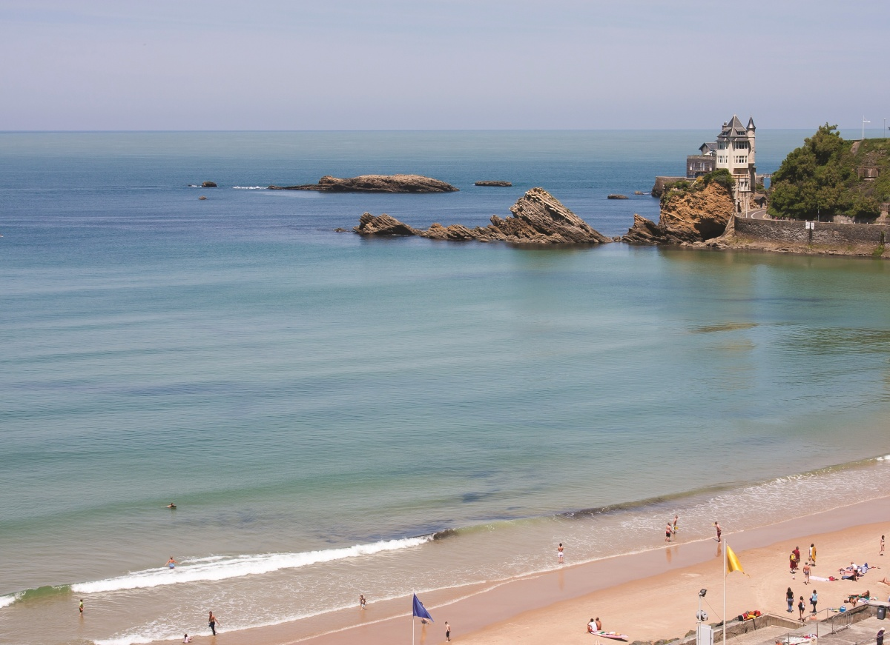
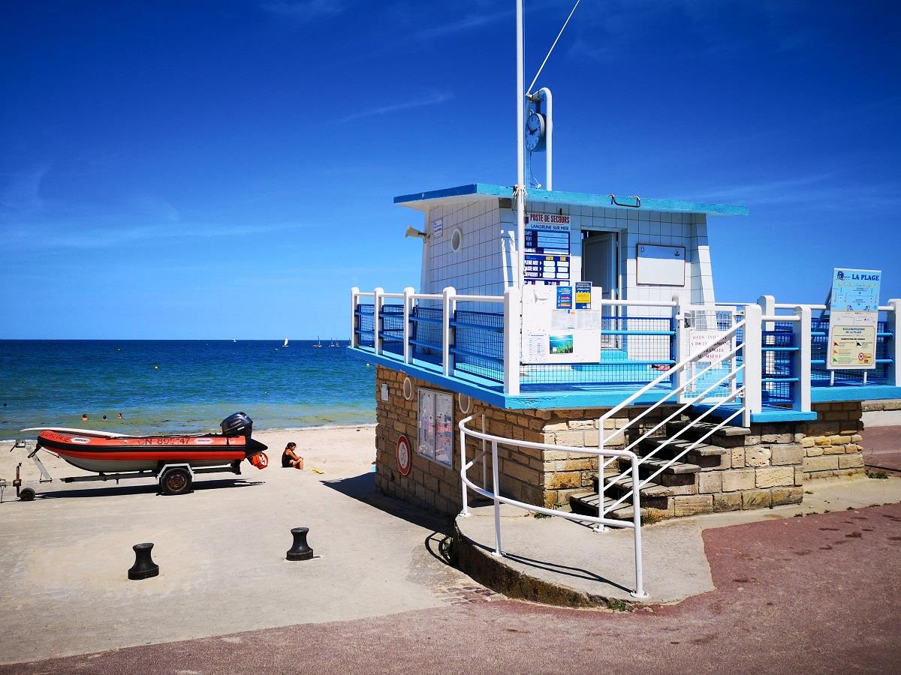
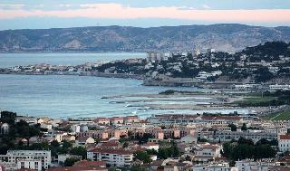
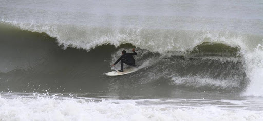
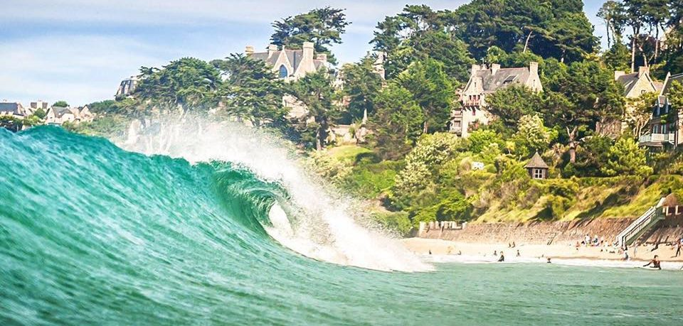

Accueil
LE SPOT DU CAP FERRET
Avec 25 km de côte, le cap ferret n'est pas un, mais une multitude de spots de surf, c'est un terrain de jeu géant pour surfeur! Parmi les repères favoris des surfeurs, on y trouve le spot du grand crohot et celuidu truc vert nottament.
Notre partenaire dans cette zone?
Le surf-club de la presqu'île ! incontournable pour pour prendre des cours, ou rencontrer d'autres mordus de surf. Leur site
LE SPOT COLLIGNON
Des bonnes grosses vagues en france?... On n'y croyait pas non-plus!
La plage de collignon saura satisfaire les surfeurs qui cherchent un peu plus de piment dans leur ride.
LE SPOT DE HOSSEGOR
Autoproclammé l'un des meilleurs spots du monde, hossegor offre des spots de surf prisés dans la région, de la Nord à la Gravière, tout surfeur est sur de trouver son bonheur.
Le hossegor surfclub est notre partenaire de a région, une école de surf, mais pas que! vous pourrez aussi vous initier au paddle et au kitesurf.
Leur site
LE SPOT COTE DES BASQUES
La cote des basques offre une multitude de spots à travers un large panel de plages!
Le surfclub côte des basques est ici notre école partenaire, une école se voulant très dynamique et active en ligne, allez donc surfer sur leur profile FB ;)
Leur site
LE SPOT DE LANGRUNE SUR MER
Langrune étant située sur la Côte de Nacre, à 15 min de Caen, vous pourrez profiter de ses nombreuses activités : voile, pêche, jeux de plage, tennis, vélo et parcours pédestre en plus du surf!
C'est l'école voile de Nacre qui a ici décidé de s'engager avec nous pour la propreté des spots de surf.
Leur site
LE SPOT DE MARSEILLE
Qui ne connaît pas Marseille? grande ville, grandes plages, littérallement !
L'association sports marseille est notre partenaire dans cette région!
Leur site
LE SPOT DE PALAVAS LES FLOTS
Vous êtes débutants de la ride ? Apprenez à surfer malin sur Oléron ! L’île regorge de spots adaptés et d’écoles de surf pour découvrir ce sport de glisse en toute sécurité.
L'école de surf PALAWAI SURF est la plus fréquentée de la région, pas étonnant vu la multitude de cours et initiations qu'elle assure!
Leur site
LE SPOT DE PERROS
Un mot de notre partenaire suffit ici à le définir:
Toute l’année l’équipe de Perroz Surf School vous accueille sur les sites de Perros-Guirec (Trestraou) et Trévou-Tréguignec (Trestel) et vous fera partager leur passion de la glisse à travers le surf, le stand up paddle et le kayak dans le cadre exceptionnel de la côte de granit rose. Perroz Surf School vous propose des formules pour tout âge et tous les niveaux.
Découvrez les différentes activités proposées en toute sécurité avec du matériel adapté, récent et de qualité afin de faciliter votre apprentissage.
Leur site